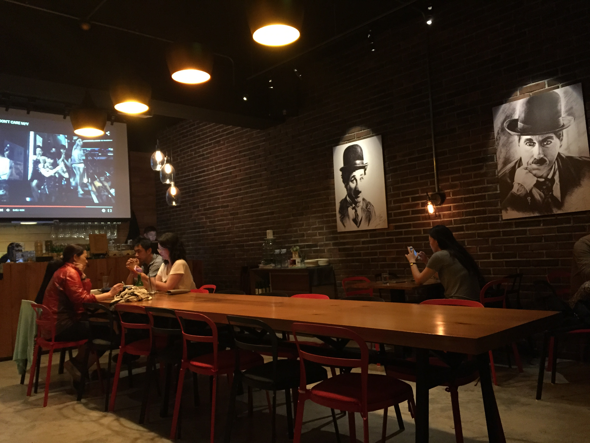
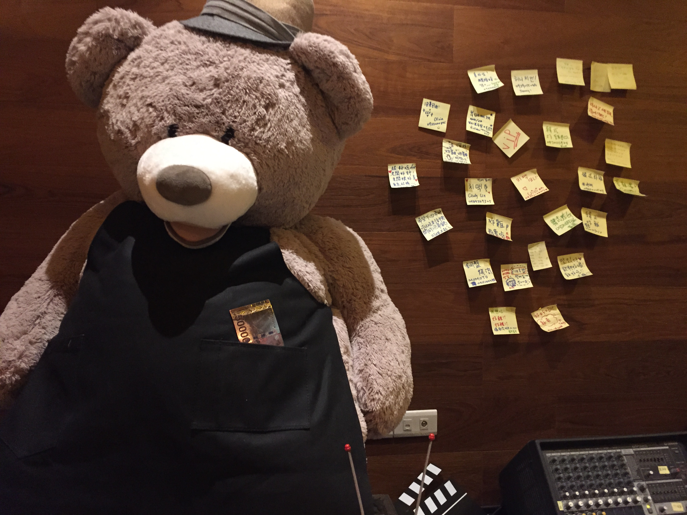
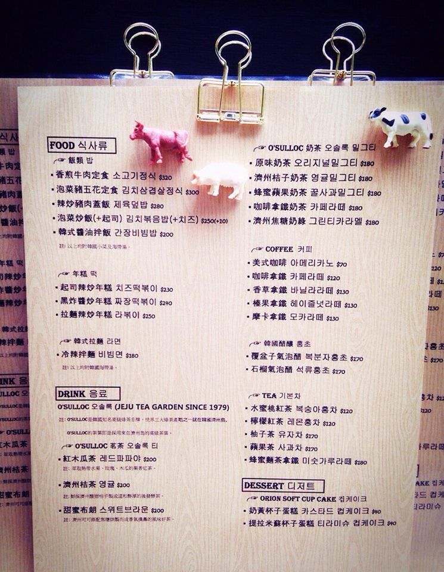
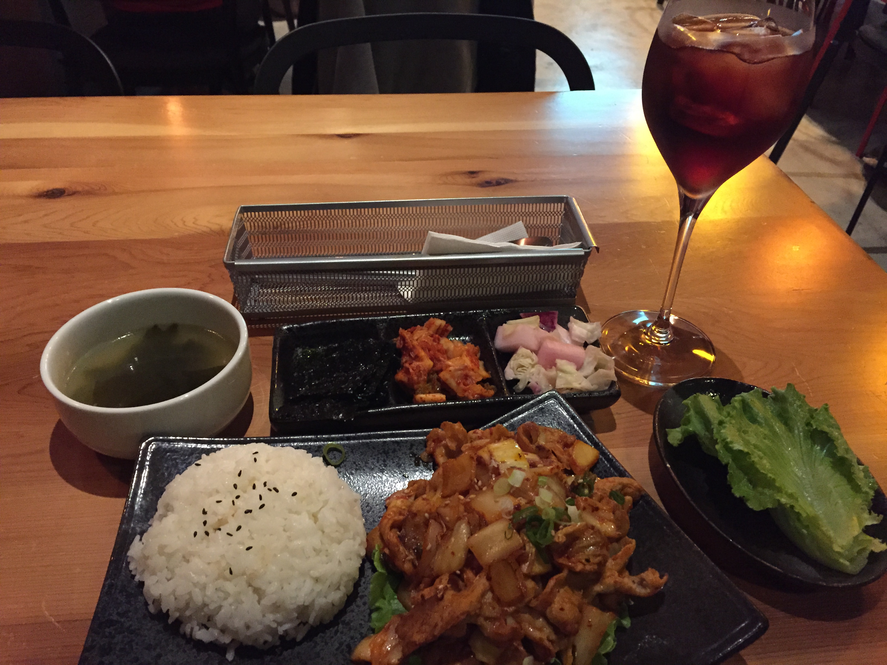

2015-10-31 아저씨Ajeossi Cafe大叔咖啡
今天來到的地方是位於民權東路六段上的아저씨Ajeossi Cafe大叔咖啡，아저씨在韓文中就是大叔的意思，念法為「阿糾西」，當天造訪的時候已近八點，又下雨急著想快點進門，所以忘了拍外觀了哈哈。
直接來看看店內，這是從我的位置拍出去的樣子，店內位置不算多，我很幸運的佔到了最後一張四人桌，所以後來的客人都只能坐在中間的大長桌了。
這大熊真的好可愛！旁邊貼的便條紙都是客人的留言。
來看一下店內的菜單吧～因為我又忘了拍照，所以放了官方臉書上的菜單囉～

猶豫了很久，今天決定先試試泡菜豬五花定食，以及點了這版菜單上沒有的覆盆子燒酒。
杯子和盤子的高低差有點大，喬了一下才讓能他們一同入鏡。
左上是溫和的海帶湯，韓國人最常煮的湯品就屬大醬湯和海帶湯了，特別是海帶湯是韓國人生日的時候必喝的湯喔，跟我們生日要吃豬腳麵線一樣的意思。
三樣小菜分別是海苔、韓國泡菜和酸酸甜甜的蘿蔔與高麗菜泡菜，海苔很香，與飯一起包著吃非常對味。
泡菜五花肉的味道非常好，配著飯或是和生菜包著吃都很美味，不過多少有點辣，怕辣的朋友可能要注意一下了。
吃完了主菜後，一邊看大螢幕上的韓國MV，內部應該有人非常喜歡《沒關係是愛情吧》，吃飯的途中連續出現了好多首OST。拍這張的當下是Winner的공허해(EMPTY)，是我很喜歡的一首歌所以就跟著入鏡了～
那麼就下次見啦（揮手）。
Ajeossi Cafe 大叔咖啡廳
地址：114台北市內湖區民權東路六段23-1號
電話：02-27963616